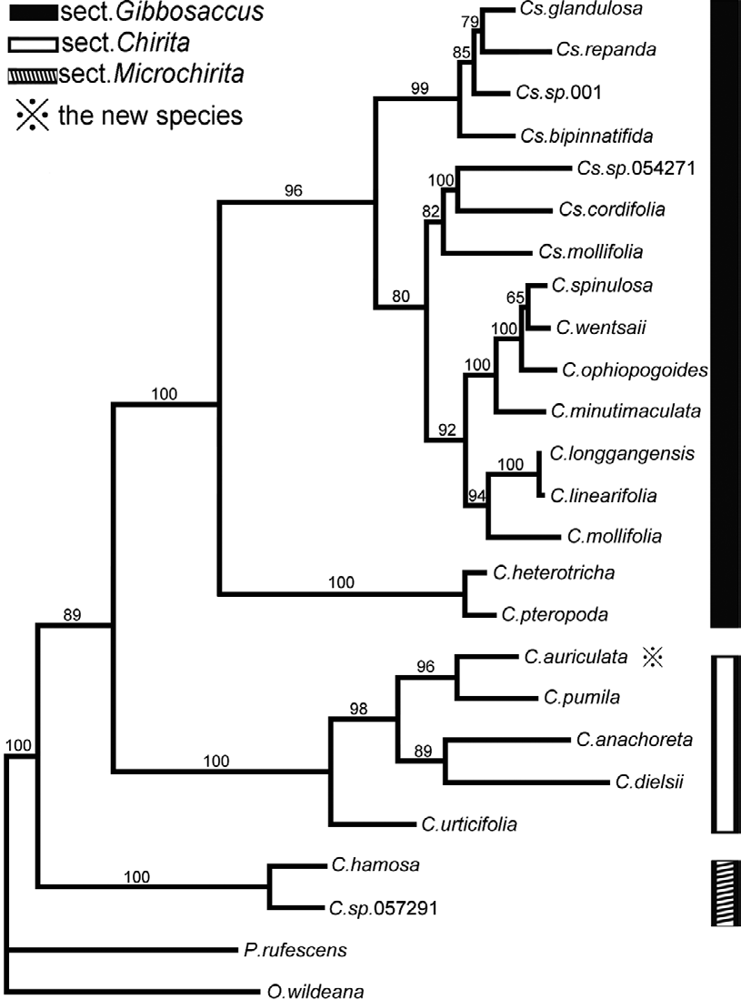

Full text is available as a scanned copy of the original print version.
Get a printable copy (PDF file) of the
complete article, or click on a page image below to browse page by page.
Links are also available for
Selected References.
Images in this article

Fig. 2 Single MPT generated from the combined ITS and trnL-F data. C = Chirita, Cs = Chiritopsis, P = Paraboea, O = Ornithoboea.